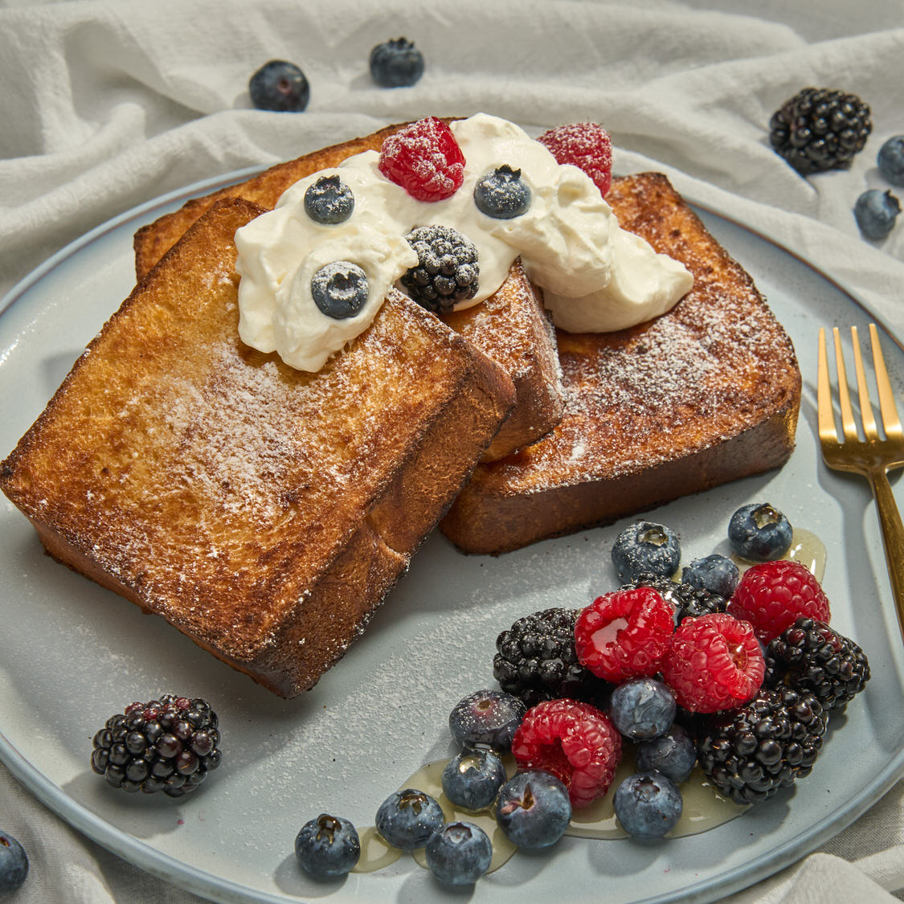

BREAKFAST: FRENCH TOAST
Golden and crispy on the outside, soft and fluffy on the inside, this french toast is the perfect way to start your morning. Topped with fresh berries and a drizzle of maple syrup, it's a delicious breakfast that's easy enough for anyone to make.

Image Credit: "Air Fryer French Toast" by Typhur Eats at https://explore.typhur.com/air-fryer-french-toast.